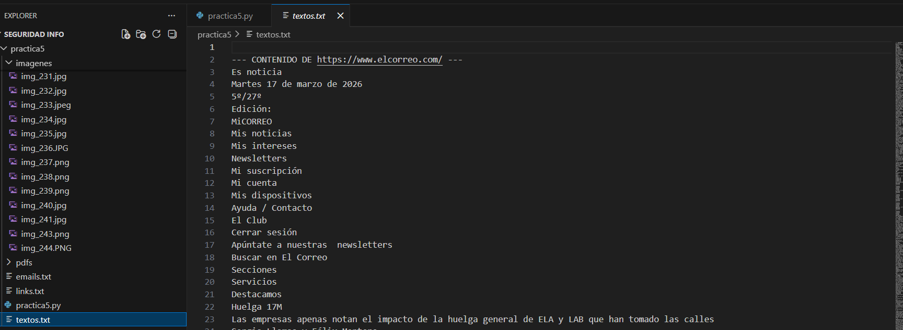
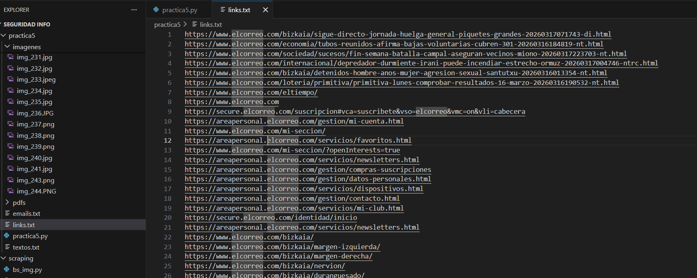
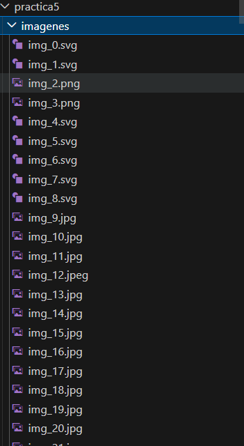

Web Scraping
Introducción
En esta práctica se ha desarrollado un script en Python capaz de extraer información de páginas web de forma automatizada. El objetivo es recopilar datos como textos, imágenes, enlaces y archivos desde distintos dominios con temática similar.
El script permite estructurar la información obtenida, almacenando los textos en archivos, las imágenes en carpetas específicas y los hipervínculos en documentos separados, facilitando así su posterior análisis.
Capturas de pantalla
A continuación se muestran algunas capturas de los resultados generados



Respuestas
a) ¿Qué se puede conseguir con este tipo de programas?
Permiten automatizar la extracción masiva de información pública (textos, imágenes, enlaces o archivos). Un uso real sería un comparador de precios que analice varias webs y detecte cambios automáticamente.
b) ¿Qué información se puede scrapear en OSINT?
Se pueden obtener correos electrónicos, teléfonos, documentos públicos (PDFs), imágenes con metadatos y enlaces que revelan estructura interna o tecnologías utilizadas.
c) ¿Es útil en redes sociales? ¿Qué problemas hay?
Es útil para analizar menciones o tendencias, pero presenta dificultades como contenido dinámico, bloqueos por parte de la plataforma, necesidad de login y posibles problemas legales (RGPD).
Valoración de la práctica
Dificultad media. Es una práctica útil para aprender a extraer información de la web, aunque puede complicarse por contenido dinámico y restricciones de las páginas.